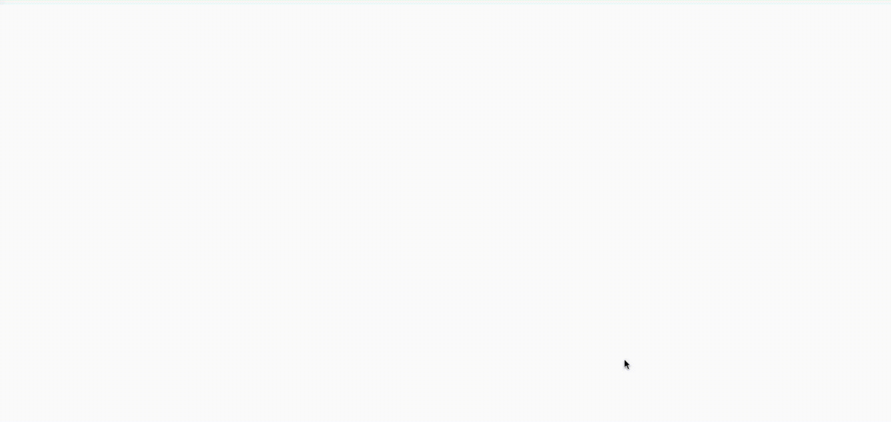

9. 把錯誤壓縮進脈絡視窗（Compact Errors into Context Window）
這一條有點短，但值得一提。代理的好處之一是「自我修復」。在短任務裡，LLM 可能呼叫一個失敗的工具。好的 LLM 有相當高的機會讀懂錯誤訊息或堆疊追蹤，並在後續的工具呼叫裡知道該改什麼。
多數框架都有實作這件事，但你也可以只做這一件，完全不碰其他 11 個要素。範例如下：
thread = {"events": [initial_message]}
while True:
next_step = await determine_next_step(thread_to_prompt(thread))
thread["events"].append({
"type": next_step.intent,
"data": next_step,
})
try:
result = await handle_next_step(thread, next_step) # our switch statement
except Exception as e:
# if we get an error, we can add it to the context window and try again
thread["events"].append({
"type": 'error',
"data": format_error(e),
})
# loop, or do whatever else here to try to recover你可能想針對特定工具呼叫實作 errorCounter，把單一工具的嘗試次數限制在 3 次左右，或依照使用情境加上其他邏輯。
consecutive_errors = 0
while True:
# ... existing code ...
try:
result = await handle_next_step(thread, next_step)
thread["events"].append({
"type": next_step.intent + '_result',
data: result,
})
# success! reset the error counter
consecutive_errors = 0
except Exception as e:
consecutive_errors += 1
if consecutive_errors < 3:
# do the loop and try again
thread["events"].append({
"type": 'error',
"data": format_error(e),
})
else:
# break the loop, reset parts of the context window, escalate to a human, or whatever else you want to do
break
}
}連續錯誤次數觸及某個門檻，也許正是升級給真人處理的好時機，看是要由模型決定，或是由確定性程式碼直接接管控制流。

{kind=link}
好處：
- 自我修復：LLM 能讀懂錯誤訊息，並在後續的工具呼叫裡知道該改什麼
- 持久：就算某次工具呼叫失敗，代理還是能繼續跑
我相信你會發現，這件事做太多次的話，代理會開始空轉，可能一次又一次重複同樣的錯誤。
這正是要素 8：自己掌握控制流與要素 3：自己掌握脈絡建立派上用場的地方。你不必只是把原始錯誤原封不動放回去，可以完全重新組織錯誤的呈現方式、把先前的事件從脈絡視窗移除，或任何你實測有效、能讓代理回到正軌的確定性做法。
但避免錯誤空轉的頭號方法，是擁抱要素 10：小而專注的代理。